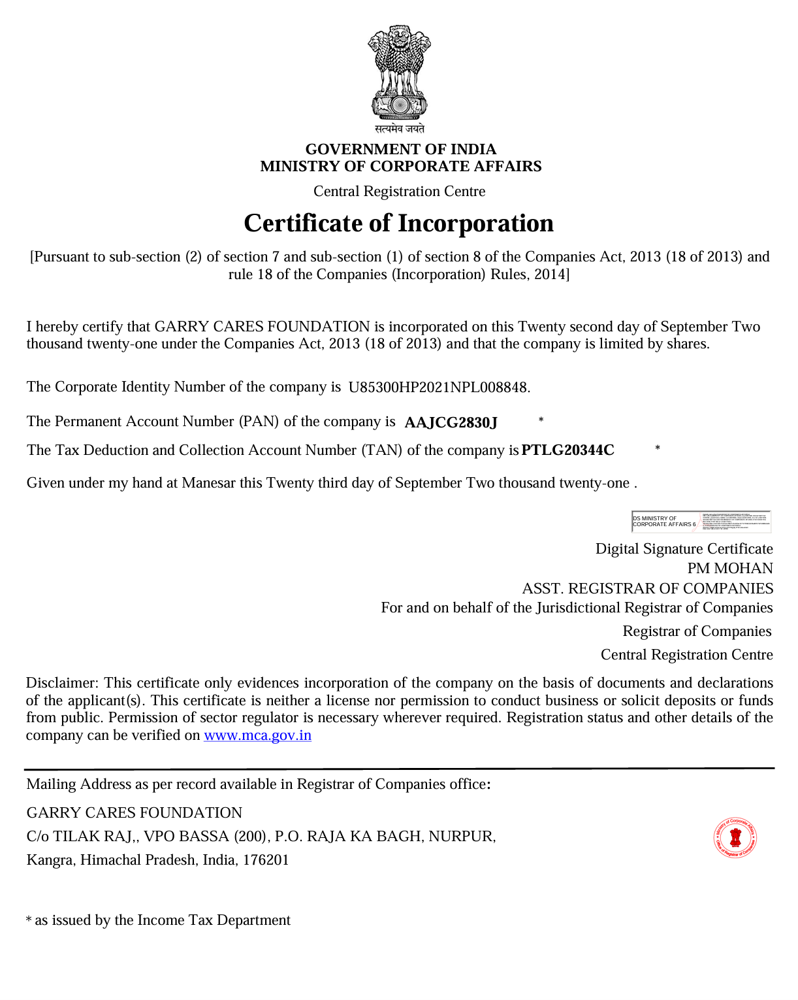

Income tax benefit
Income tax benefit
80G Certificate
For donors who need tax benefit documentation and receipt support.
View CertificateLegal documents
Garry Cares Foundation keeps its key compliance documents easy to find for donors, partners, volunteers and well-wishers.
Certificate center
This page is prepared for Garry Cares Foundation statutory documents: 80G Certificate, 12A Certificate, Registration Certificate and PAN Card. Once the official document files are uploaded, each card below can open or download the matching certificate.
The certificate buttons below open the uploaded PNG files from the website assets folder for quick donor and partner verification.
Available certificates
Keep these documents visible for donor verification, CSR discussion, partnership review and receipt support.
Income tax benefit
For donors who need tax benefit documentation and receipt support.
View Certificate Trust registration
Trust registration
Foundation registration record for charitable activity compliance.
View Certificate
Legal identityOfficial foundation registration proof for partners and supporters.
View Certificate Accountability
Accountability
PAN document for verification, donor records and formal paperwork.
View CertificateNeed confirmation?
For donation confirmation, receipt support or certificate-related verification, please connect with Garry Cares Foundation directly.